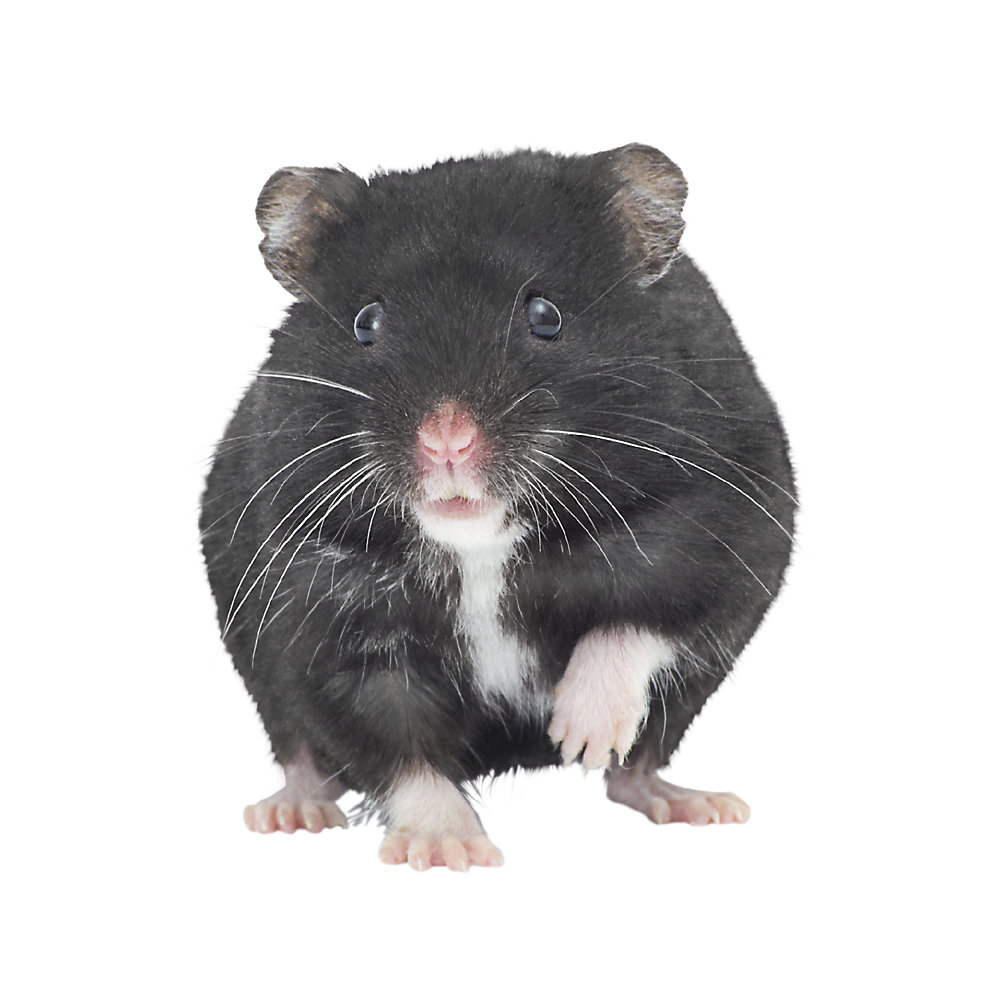
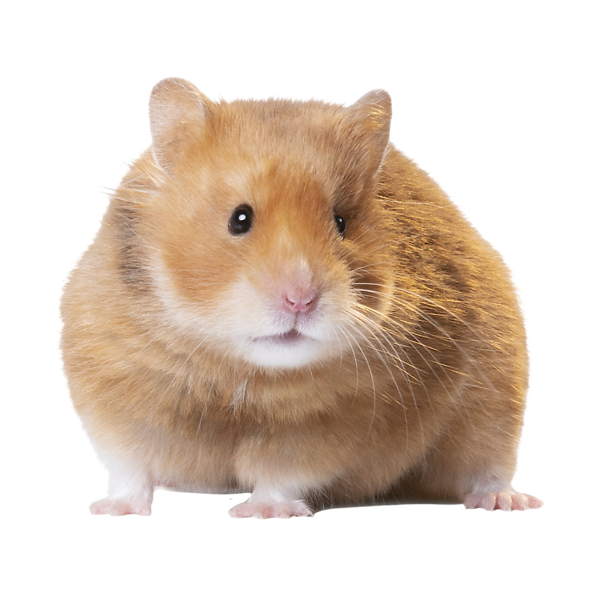
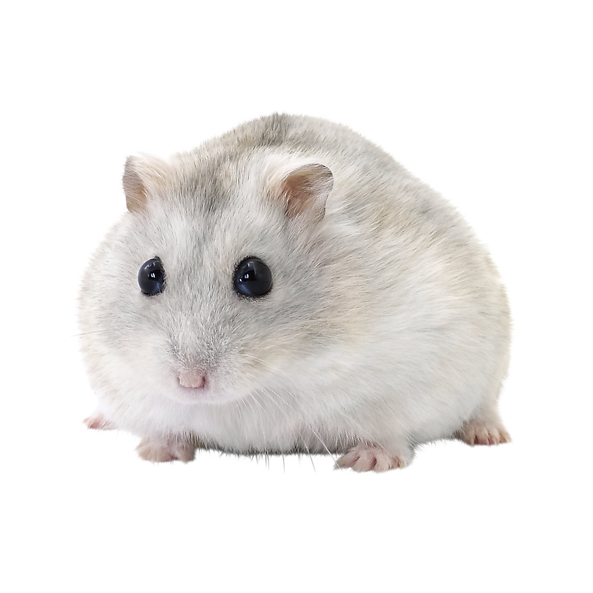
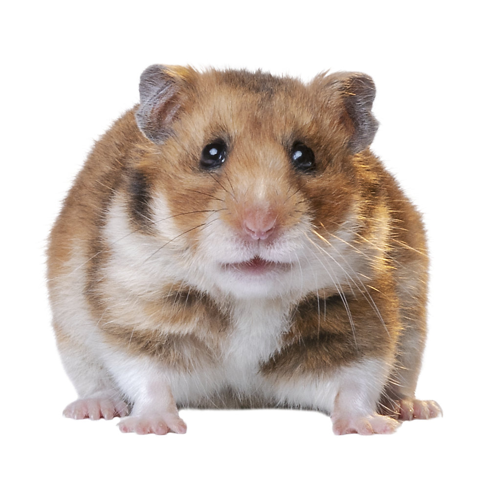
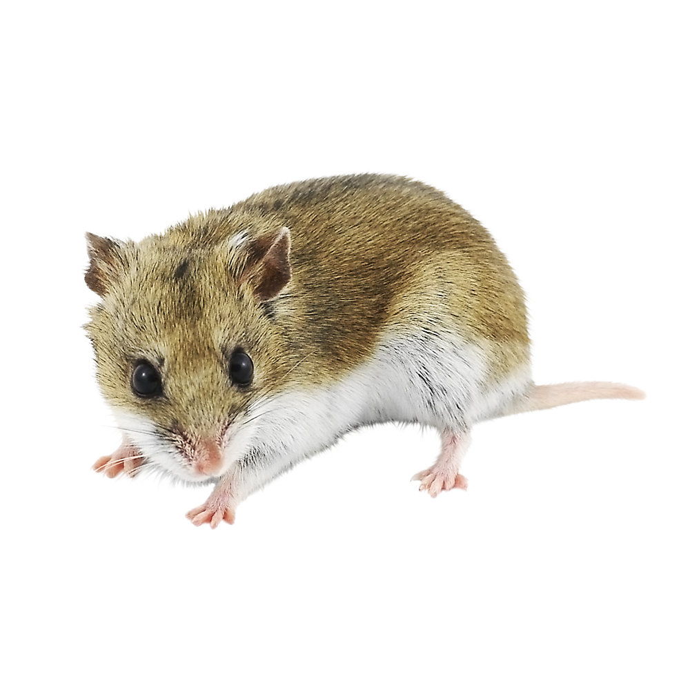

Showing 5 of 5 products
Russian Dwarf Hamster

Russian Dwarf Hamsters are energetic and athletic creatures that make great pets. Their fur-lined pouches extend from their head to their shoulders, which helps them to transport food. Learn more about these fascinating creatures, their behaviors, and how to care for them in the sections below.
€7.00
Short-Haired Hamster

Short-Haired Syrian Hamsters are energetic and athletic creatures that make great pets. Their fur-lined pouches extend from their head to their shoulders, which helps them to transport food.
€6.50
Winter White Hamster

Winter White Dwarf Hamsters are energetic and athletic creatures that make great pets. Their fur-lined pouches extend from their head to their shoulders, which helps them to transport food.
€7.00
Fancy Bear Hamster

Fancy Bear Syrian Hamsters are energetic and athletic creatures that make great pets. Their fur-lined pouches extend from their head to their shoulders, which helps them to transport food.
€10.00
Chinese Dwarf Hamster

Chinese Dwarf Hamsters are energetic and athletic creatures that make great pets. Their fur-lined pouches extend from their head to their shoulders, which helps them to transport food.
€7.00